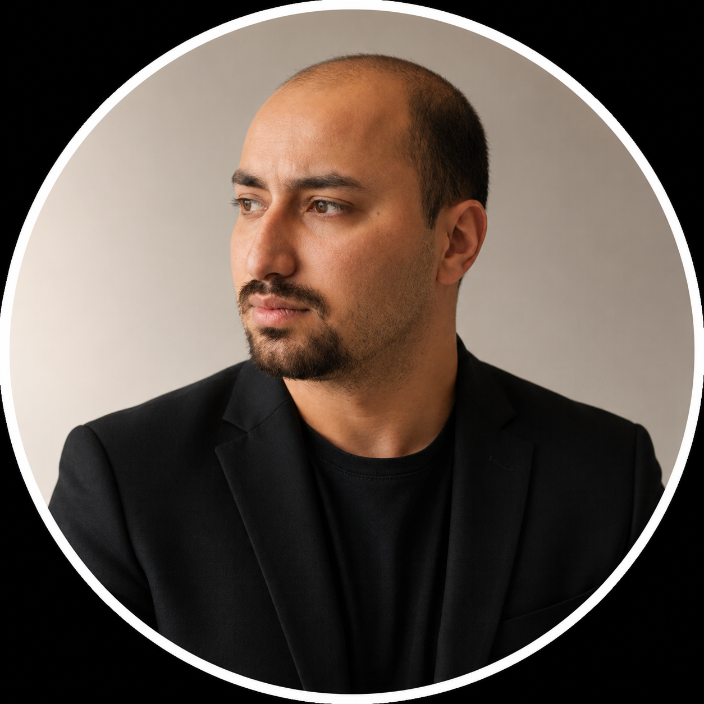
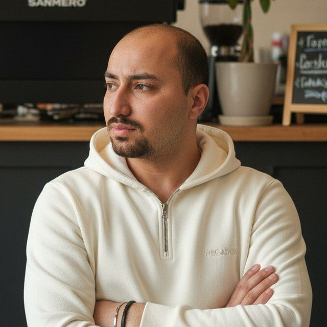

Video editing
Commercial films, promotional edits, social content, and YouTube. Story, pace, color, and sound working together.
OPEN FOR PROJECTS & REMOTE ROLES
Video editor. Motion designer. AI video creator.
I turn ideas into cinematic visual stories. A precise edit. A distinctive motion. A world that didn’t exist before.

Aref JalaliVideo · Motion · AI↗PRECISION IN EVERY FRAME.
CHARACTER IN EVERY MOVE.
01 / THE CREATIVE JOURNEY
The story changes.
The intent stays.
02 / THE CRAFT
A complete visual language, from the first idea to the final export.
Commercial films, promotional edits, social content, and YouTube. Story, pace, color, and sound working together.
Logo animation, animated typography, explainers, and brand motion that feels considered in every frame.
From generated images to moving worlds. Seedance and Kling AI, shaped through editing, music, and creative direction.
Premiere Pro · After Effects · Seedance · Kling AI
THE PRODUCTION MAP
AI and post-production connected by one creative direction.
Audience. Intent. Visual direction.
References. Images. Consistency.
Veo. Seedance. Kling. Runway.
Pacing. Typography. Brand motion.
Color. Sound design. Final delivery.
Editing, motion graphics, generative visuals and voice tools — chosen to fit the work.
03 / SELECTED EXPLORATIONS
Real experiments and editing education. The original videos are one click away.
THE WAY I SEE IT
AI expands what I can imagine. Editing and motion design shape what the audience experiences.
Aref Jalali
04 / THE CREATIVE
Video editor, motion designer, and AI video creator. Based in Yerevan. Creating for a wider world.
My background spans more than six years in video production, across commercial videos, social content, explainers, and brand animation. I bring the same attention to rhythm, visual consistency, and finishing to AI-assisted work.
A background in creative teams
HivadIT · Persia Tanin · Sorkh · PadideitTHE EXPERIENCE MAP
Seven-plus years across project-based production, creative teams and editing instruction.
JUL 2019 — JUN 2026
Project-Based Videographer & Video Editor
Filming, green-screen work and post-production for internal and promotional content.
PROJECT-BASEDMAY 2020 — MAY 2022
Video Editor & Premiere Pro Instructor
Commercial, social and instructional video, with online, in-person and offline Premiere Pro teaching.
FULL-TIMEJUL 2022 — FEB 2026
Video Editor & Content Producer
Commercial editing, brand motion, logo animation and reusable templates for company and client channels.
CREATIVE COLLABORATIONNOV 2024 — DEC 2025
Video Editor & Social Media Content Producer
Instagram posts, product videos and educational promotional content for Kakh-e Sorkh and related offerings.
FULL-TIME05 / THE NEXT CHAPTER
Have a project, a creative challenge, or a remote role in mind? Tell me what you’re building.
Start a conversation on LinkedInthearefworksarmenia@gmail.comFREELANCE · CONTRACT · FULL-TIME REMOTE